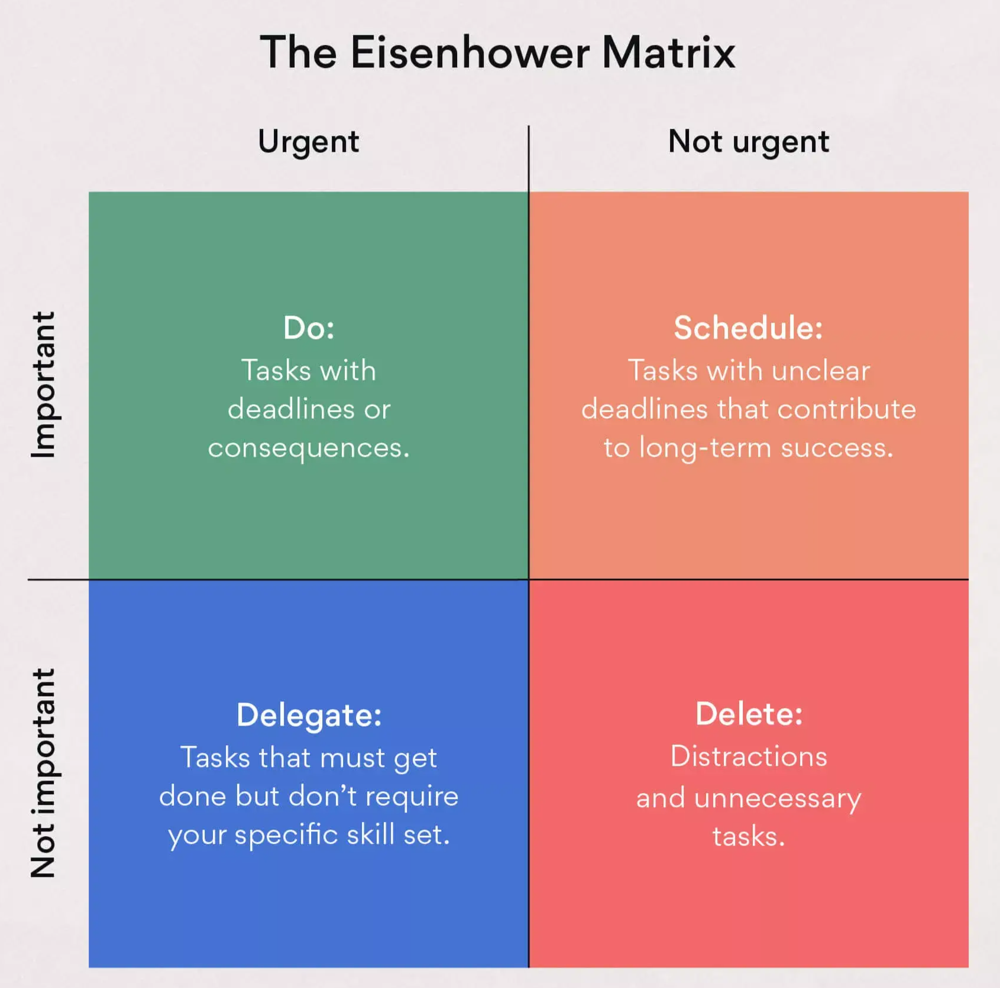

February 28, 2025
Source: CDC
Source: Newcomer, Hatry, and Wholey (2015)
Source: CDC
Source: CDC
Source: A Practical Guide for Engaging Stakeholders in Developing Evaluation Questions
An auspicious day to witness first power from @SouthForkWind with many dedicated colleagues and friends. For the first time in history, families and businesses on Long Island are using offshore wind! Congrats to @OrstedUS @EversourceCorp @EHTownTrustees and @LongIslandPower! pic.twitter.com/ughxe03eHK
— Doreen Harris (@Doreen_M_Harris) December 7, 2023
| Stakeholders | Interests and concerns |
|---|---|
| Local residents | Concerned about visual and noise pollution, potential impacts on property value, and benefits to the local community like job opportunities and community facilities. |
| Environmental & conservation groups | Interested in the project’s ecological impact, particularly bird migration and marine life, but also supportive of renewable energy initiatives. |
| Local and national governments | Interested in sustainable energy goals, economic development, job creation, and regulatory compliance; concerned about residents NIMBY. |
| Utility company | Interested in increasing share of renewables per regulation, concerned about grid reliability. |
| Potential energy consumers | Interested in reliable, cost-effective, and sustainable energy. |
| Company investors and shareholders | Looking for profitability, sustainable investments, and risk management. |
| Local fishing and maritime industries | Concerned about potential disruptions to fishing routes and marine ecosystems. |
| Nearby tourism businesses | Concerns about potential impacts on the aesthetics of the landscape and tourist attractions. |
| Renewable energy advocacy groups | Supportive of clean energy but keen on ensuring it’s done right without unnecessary environmental impacts. |
Adapted from Patrick Grégoire. Read more: South Fork Wind Delivers First Offshore Wind Power to Long Island
New York offshore wind delay evaluation example
Photo source: Library of Congress
I have two kinds of problems: the urgent and the important. The urgent are not important, and the important are never urgent.
— Dwight D. Eisenhower

Image source
Source: UNEG